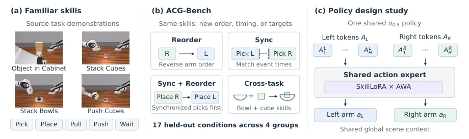
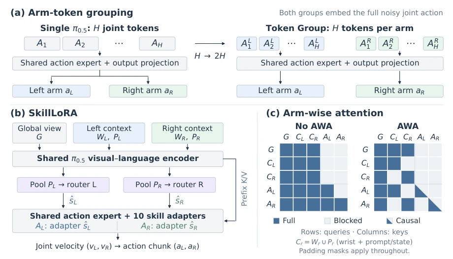
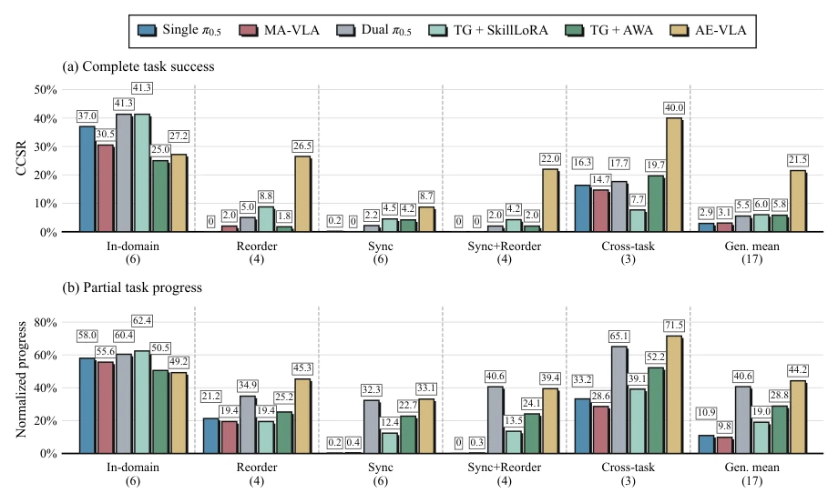
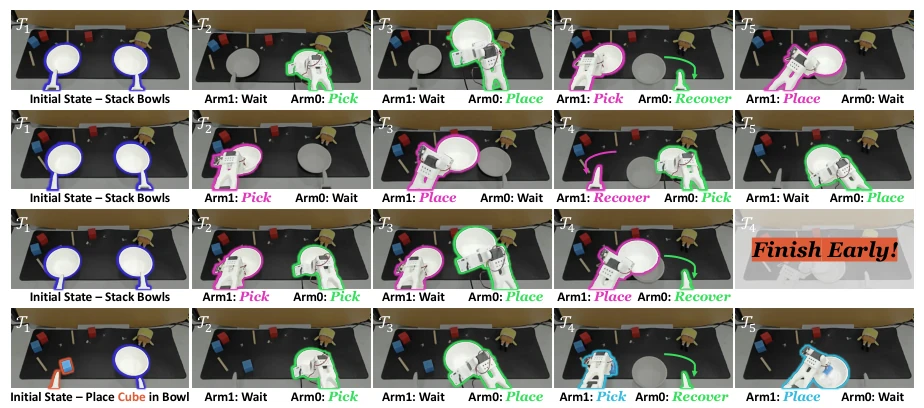
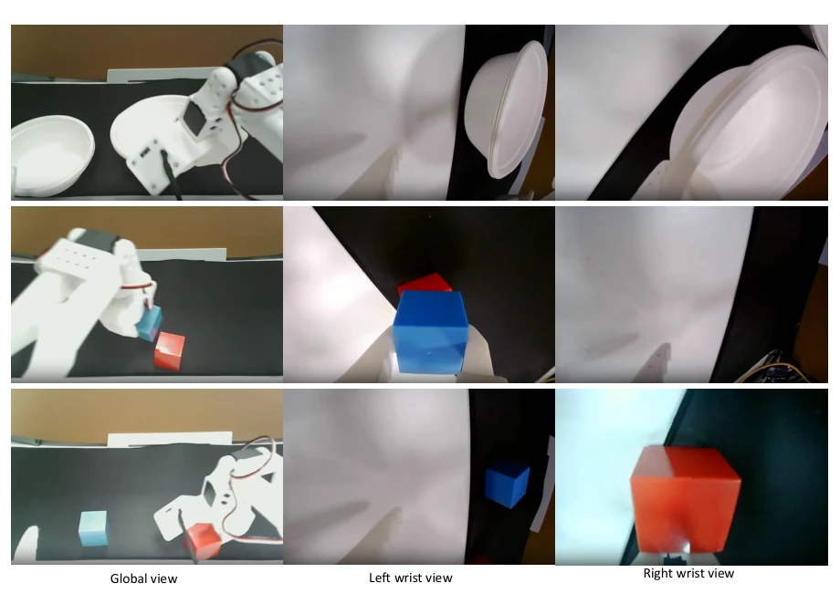

This paper casts a cold shower on the "combination fist" capability of dual-arm VLA, yet also provides a ladder. The pain points are accurately identified: existing models merely rote-memorize trained collaboration sequences and collapse when the rhythm changes. ACG-Bench is designed meticulously, clearly decomposing rearrangement, synchronization, and cross-task scenarios. The AE-VLA architecture is interesting; combining Token grouping, SkillLoRA, and AWA, the "combination fist" is indeed stronger than single usage, with simulation improvements nearly 7-fold. However, there are many drawbacks: in-domain performance was sacrificed for generalization (ID CCSR dropped from 45% to 27%), synchronization tasks remain difficult (8.67%), and it relies entirely on the \pi0.5 large foundation to hold the stage, questioning if small models can work. Additionally, physical experiments only cover 5 conditions, making the sample size somewhat thin. Overall, this is a solid attempt in the dual-arm generalization field, but it still falls short of "true intelligence".
研究动机Motivation
双臂 VLA 模型在操作任务上进步明显，但“会做”不等于“会组合”。现有工作如 MA-VLA (Zhang et al., 2026) 和 TwinVLA (Im et al., 2026) 虽探索了臂角色交换或特定表示，但缺乏统一基准来隔离训练与架构选择的影响。现有基准多评估训练时见过的协作模式 (Mu et al., 2025; Chen et al., 2025)，无法测试技能重组能力。本文指出，熟悉技能在不同顺序、时序或跨任务组合下的执行能力（ACG）是核心瓶颈。若无法在未见协调要求下复用原子技能，机器人只能依赖固定协作流程，难以应对复杂多变场景。因此，需要构建控制变量的基准并探索支持 ACG 的架构设计。
Dual-arm VLA models show significant progress in manipulation tasks, but "knowing how to do" does not equal "knowing how to combine". Existing works such as MA-VLA (Zhang et al., 2026) and TwinVLA (Im et al., 2026) explore arm role swapping or specific representations, but lack a unified benchmark to isolate the effects of training and architecture selection. Existing benchmarks mostly evaluate collaboration patterns seen during training (Mu et al., 2025; Chen et al., 2025), unable to test skill recombination capabilities. This paper points out that the execution capability of familiar skills under different orders, timings, or cross-task combinations (ACG) is the core bottleneck. If atomic skills cannot be reused under unseen coordination requirements, robots can only rely on fixed collaboration processes, making it difficult to cope with complex and changing scenarios. Therefore, it is necessary to construct controlled variable benchmarks and explore architecture designs supporting ACG.

Figure 1. ACG-Bench and the design study. We test familiar skills under new order, timing, and cross-task requirements. Using one shared 𝜋0.5 policy, we compare token grouping, skill-specific adapters, and arm-wise attention.
The method is based on the \pi0.5 backbone network, the core lies in three architectural improvements. First is Token grouping, splitting the originally mixed \H joint action tokens into two groups: left arm \A_L and right arm \A_R, giving each arm an explicit action representation range, facilitating subsequent module operations. Second is SkillLoRA, introducing 10 low-rank adapters (LoRA) corresponding to atomic skills, selecting parameters via a router based on current skills, achieving skill-conditioned parameter reuse, where left and right arms can be shared or independently called. Finally is Arm-wise Attention (AWA), limiting direct interaction of cross-arm action tokens via masking, only allowing information transmission through global context and local prefixes, reducing dependence on specific arm pairings. The three combined form AE-VLA, achieving more flexible skill recombination under shared policies, jointly optimizing action loss and router classification loss during training.

Figure 2. Three design choices within one 𝜋0.5 policy. (a) Single uses 𝐻joint action tokens to predict both arms. Token Group uses two groups of 𝐻tokens, each assigned to one arm, within a shared action expert. (b) SkillLoRA selects a skill adapter for each group. (c) AWA controls attention between groups while retaining global context. Here 𝐻= 50; arrows in (a) summarize decoding and denoising.
Experiments are based on ACG-Bench, containing 23 task-condition pairs, covering rearrangement, synchronization, and cross-task combinations. Baselines include Single \pi0.5, MA-VLA, and Dual \pi0.5. Evaluation metric is CCSR, requiring goal achievement and satisfying timing/sequence constraints. Simulation results show AE-VLA generalization success rate reaches 21.53%, far exceeding Single \pi0.5's 2.94% and Dual \pi0.5's 5.53%. Physical SO101 robot experiments achieved 39.00% success rate on 5 unseen conditions. Ablation experiments show AWA and SkillLoRA have complementarity, single use offers limited improvement, combined effect is significant. But it was found that generalization improvement accompanies in-domain performance decline (ID CCSR dropped from 45% to 27%), and synchronization tasks remain a difficulty.

Figure 3. Success and progress by test group. Parentheses give condition counts; each condition has 100 episodes per method. TG means Token Group. Bars show means over conditions. Generalization averages all 17 non-in-domain conditions.

Figure 4. SO101 examples. Rows show Stack Bowls/In-domain, Stack Bowls/Reorder, Stack Bowls/Sync, and Cube in Bowl/Cross-task. Table 3 reports all evaluation trials.
其他图片Other Figures

Figure 6. SO101 training demonstrations. Example observations from the global, left-wrist, and right-wrist cameras (left to right). We collect 50 demonstrations per training task through LeRobot teleoperation.